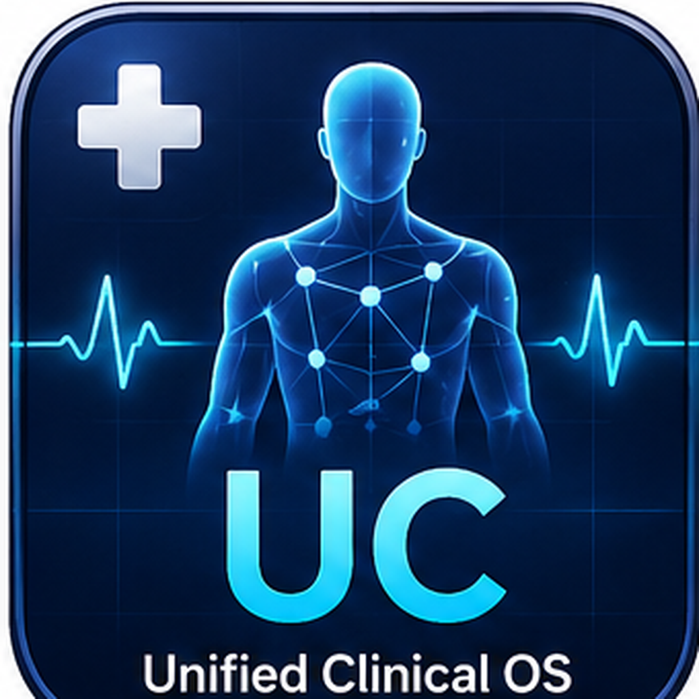
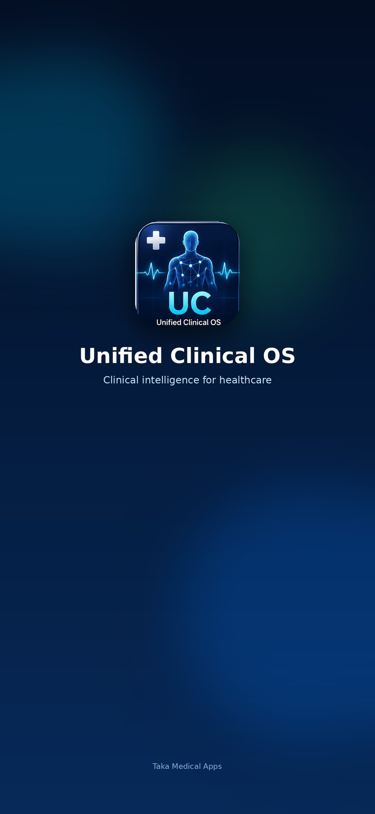

Unified Clinical OS
感染管理、抗菌薬、細菌学、耐性菌、感染対策を統合した、医療従事者向け臨床リファレンスアプリです。
医療従事者の思考を支援するために。感染管理、抗菌薬、臨床推論、フィジカルアセスメントを、iOSアプリとして使いやすく整理しています。


Taka Medical Appsは、医療従事者の学習・情報整理・臨床リファレンスを目的として設計されたアプリシリーズです。現場で使いやすい構造、読みやすい情報、継続的な改善を重視しています。

感染管理、抗菌薬、細菌学、耐性菌、感染対策を統合した、医療従事者向け臨床リファレンスアプリです。
臨床推論、感染症、抗菌薬、フィジカルアセスメントを統合した医療知識の学習・情報参照ワークスペースです。